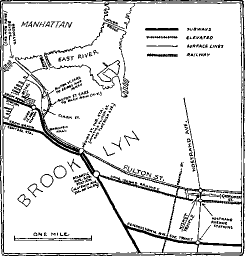

No. 10
Upon the earth distress of nations with perplexity: the sea and the waves (the restless, discontented) roaring; men’s hearts failing them for fear and for looking to the things coming upon the earth (society); for the powers of the heavens (ecclesiasticsm) shall be shaken. . . When ye see these things begin to come to pass, then know that the Kingdom of God is at hand. Loo': i. lift up your heads, rejoice, for your redemption draweth nigh —Matt. 24:33; Mark 13:29; Luke'21:25-31.
Vol. XLII
Semi-Monthly
Anno Mundi 6049—May 15, 1921
CONTENTS
ROCKOF AGES,^ Other founSation cari.. > nc^’man-'iay 7/Sfei a ransom^for'all^Vx^
Our Reasonable Service.......................
What we Sacrifice.................................
Who are Anointed.................................
The Benefits .........................................
Cup of Salvation...................................
Present Duties.........................................
Our Savior’s Names and Titles...........
Ultimate Blessings and Cursings.......
Mutual Surprise ...................................
Practical Love for Christ’s Brethren.
Letters from Afield...............................
Good Hopes for 1921...............................
Convention Items ...................................
.147
.148 .149 .150 .151
.152 .153 .154 .155 .156 .156 .157 .159
f
“I will stand upon my watch and will set my foot upon the Tower, and will watch to see what He will say unto me, and what answer I shall make to them that oppose me”—Hahakkuk £: 1.
THIS JOURNAL AND ITS SACRED MISSION
rHIS journal is one of the prime factors or instruments in the system of Bible instruction, or “Seminary Extension”, now being presented in all parts of the civilized world by the Watch Tower Bible & Tract Society, chartered A. D. 1884, “For the Promotion of Christian Knowledge”. It not only serves as a class room where Bible students may meet in the study of the divine Word but ilso as a channel of communication through which they may be reached with announcements of the Society’s conventions and of the coming of its traveling representatives, styled “Pilgrims’, and refreshed with reports of its conventions.
Gur “Berean Lessons” are topical rehearsals or reviews of our Society’s published Studies most entertainingly arranged, and very lelpful to all who would merit the only honorary degree which the Society accords, viz., Verbi Dei Minister (V. D. M.), which translated into English is Minister of God’s "Word. Our treatment of the International Sunday School Lessons is specially for the older Bible students and teachers. By some this feature is considered indispensable.
This journal stands firmly for the defense of the only true foundation of the Christian’s hope now being so generally repudiated —redemption through the precious blood of “the man Christ Jesus, who gave himself a ransom [a corresponding price, a substitute] for 411”. (1 Peter 1:19; 1 Timothy 2:6) Building up on this sure foundation the gold, silver and precious stones (1 Corinthians 3: Ills ; 2 Peter 1:5-11) of the Word of God, its further mission is to “make all see what is the fellowship of the mystery which. . .has Deen hid in God, ... to the intent that now might be made known by the church the manifold wisdom of God”—“which in other ages was not made known unto the sons of men as it is now revealed”.—Ephesians 3 : 5-9, 10.
It stands free from all parties, sects and creeds of men. while it seeks more and more to bring its every utterance into fullest auojection to the will of God in Christ, as expressed in the holy Scriptures. It is thus free to declare boldly whatsoever the Lord hath spoken—according to the divine wisdom granted unto us to understand his utterances. Its attitude is not dogmatic, but confident; for we know whereof we affirm, treading with implicit faith upon the sure promises of God. It is held as a trust, to be used only in his service: hence our decisions relative to what may and what may not appear in its columns must be according to our judgment of his $ood pleasure, the teaching of his Word, for the upbuilding of his people in grace and knowledge. And we not only invite but urge our readers to prove all its utterances by the infallible Word to which reference is constantly made to facilitate such testing.
TO US THE SCRIPTURES CLEARLY TEACH
Chat the church is “the temple of the living God”, peculiarly “his workmanship” ; that its construction has been in progress throughout the gospel age—ever since Christ became the world's Redeemer and the Chief Corner Stone of his temple, through which, when finished, God’s blessing shall come “to all people”, and they find access to him.—1 Corinthians 3 :16, 17 ; Ephesians 2 : 20-22; Genesis 28 :14; 'Galatians 3 : 29.
Chat meantime the chiseling, shaping, and polishing of consecrated believers in Christ’s atonement for sin, progresses; and when the last of these “living stones”, “elect and precious,” shall have been made ready, the great.Master Workman will bring, all together in the first resurrection ; and the temple shall be filled with his glory, and be the meeting place between God and men throughout the Millennium.—Revelation 15 : 5-8.
Chat the basis of hope, for the church and the world, lies in the fact that “Jesus Christ, by the grace of God, tasted death for every man,” “a ransom for all,” and will be “the true light which lighteth every man that cometh into the world”, “in due time”.— Hebrews 2:9; Johrt 1:9; 1 Timothy 2:5, 6.
Chat the hope of the churcn is that she may be like her Lord, “see him as he is,” be “partakers of the divine nature*/ and share his glory as his joint-heir.—1 John 3:2; John 17:24; Romans 8:17; 2 Peter 1:4.
Chat the present mission of the church is the perfecting of the saints for the future work of service: to develop In herself every grace; to be God’s witness to the world; and to prepare to be kings and priests in the next age.—Ephesians 4 :12; Matthew 24: 14; Revelation 1:6; 20:6.
Chat the hope for the world lies in the blessings of knowledge and opportunity to be brought to all by Christ’s Millennial kingdom, the restitution of all that was lost in Adam, to all the willing and obedient, at the hands of their Redeemer arid his glorified church, when all the wilfully wicked will be destroyed.—Acts 3:19-23; Isaiah 35.
pmisH&D oy
watch tower, bible &-TRACT society
124 COLUMBIA HEIGHTS a a BROOKLYN, NY. U-S'A
Foreign Offices : British: 34 Craven Terrace, Lancaster Gate, London W. 2 ; Canadian: 270 Dundas St., W., Toronto, Ontario; Australasian: 495 Collins St., Melbourne, Australia; South African: 123 Plein St., Cape Town, South Africa.
Please Address the Society in Every Case.
YEARLY SUBSCRIPTION PRICE; United States, $1.00; CANADA and Miscellaneous Foreign, $1.50; Great Britain, Australasia and South Africa, 8s. American remittances should be made by Express or Postal Money Orders, or by Bank Draft. Canadian, British, South African, and Australasian remittances should be made to branch offices only. Remittances from scattered foreign territory may be made to the Brooklyn office, but by International Postal Money Orders only.
(Foreign translations of this journal appear in several languages)
Editorial Committee: This journal is published under the supervision of an editorial committee, at least three of whom have read and approved as truth each and every article appearing in these columns. The names of the editorial committee are: J. F. Rutherford, W. E. Van Amburgh, F. H. Robison, G. H. Fisher, E. W. Brenisen. Terms to the Lord’s Foors AH Bible students who, by reason of old age or other In. firmity or adversity, are unable to pay for this journal, will be supplied free if they send a postal eard each May stating their case and requesting such provision, we are not only willing, but anxious, that all such be on our list continually and in touch with the Berean studies, _______________________________
/a We do not. aa a rule, send a card of acknowledgment for a renewal or
<vonee lO OUDSenoera. for e new BobBcriptfon. Receipt and entry of renewal are indicated wfthln a month by change In expiration date, as anown on wrapper label.
Entered aa Second data Matter at Brooklyn, N. V.. Poetoffieo under the Act of March 3rd, 1879.
PERSONAL CHECKS NON-RECEIVABLE
We find ourselves obliged to insist that all remittances to this office be made by New York draft, by certified check, or by postal or express money order. Uncertified personal checks cannot longer be received. Draft, certified check, postal order, express order — no personal checks.
I.BSA. BEREAN BIBLE STUDIES By Means of TABERNACLE SHADOWS SACRWESn Chapter V: Dedication Ceremonies
Week of July 3 . . Q. 37*44 Week of July 17 . . Q. 8-14 Week of July 10 . . Q. 1*7 Week of July 24 . . Q. ; 5-20
Week of July 31 . . Q.21*29
Vew Tabernacle Shadows, with questions and notes w* •
HOW TO REACH KISMET TEMPLE
92 HERKIMER STREET, BROOKLYN
The sessions of the Brooklyn Convention, May 19-22 inclusive, will be held in the Kismet Temple, 92 Herkimer Street, Brooklyn. Friends arriving in New York at either the Pennsylvannia or Grand Central Stations can take any Brooklyn-bound train on the Interborough Rapid Transit System', riding to Brooklyn to either of the points named below :
Nevins Street (About 20 minutes from G. C. or 16 minutes from Penna. Station) : Here change from subway to Fulton Street surface or elevated lines, riding (outbound) to Nostrand Avenue. Walk one block south (to right) to Herkimer.
Atlantic Avenue : Change to Long Island Railway, local train to Nostrand Avenue Walk one block north—to left.
Nostrand Avenue: If this route is taken care must be exercised to enter a Brooklyn train marked “Pennsylvania Avenue” only. Change to surface line, riding north to Herkimer.
Friends arriving in the New York District via other railways can'find their way to Brooklyn on either of the Two Interborough lines : then proceed as above outlined.
Vol. XLII
May 15, 1921
No. 10
“What shall I render unto the Lord for all his benefits toward met I will take the Clip of salvation, and call-upon the name of the Lord. I will pay my vows unto the Lord now in the. presence of all his people. Precious in the siyht of the Lord is the death of his saints.”—Psalm 116:12-15.
THE Bible was written by holy men of old as they were moved upon so to do by the invisible power and influence of Jehovah. In some instances these men were used as types of the church. God speaks of the church—Head and body—as his beloved. The name David means beloved. In writing this Psalm David put the words into the mouths of the various members of the Christ, each one of whom can, while journeying in the narrow way, ask himself or herself the question and apply personally the answer as set forth in the Scripture above quoted. These things were written aforetime for the admonition and instruction of the members of the body on earth at the end of the age, where we now are.
WHO AM I?
“What shall I render unto the Lord?” Who am I; and how did I attain unto the position where my service would be acceptable at all ? It is only the new creature in Christ that can apply these words to himself. The very best basis for one’s becoming a new creature is the great ransom sacrifice. The perfect man Adam sinned and forfeited thereby all of his rights and privileges as a perfect human being. The perfect man Jesus suffered his life to be taken from him, but did not forfeit it. When he arose from the dead as a divine creature he possessed the right to, and the value of, the perfect human life, which value constitutes his merit, and which, as a divine creature at the time he ascended on high, he deposited with divine justice, to be used in harmony with Jehovah’s will. This merit is used during the gospel age as a basis upon which Jehovah justifies those who come to him through Christ Jesus by faith, making full consecration of themselves. It is used for the purpose of making such an acceptable sacrifice unto God as members of the body of Christ.
The animals offered by the high priest on the typical atonement day must be perfect, without spot or blemish. ; thus foreshadowing that any sacrifice which Jehovah accepts on the antitypical atonement day as a part of the body of Christ must be made perfect before it is acceptable. It must be holy, complete, made right. Justification means made right with God. It therefore follows that justification must take place before the acceptance by Jehovah of the one offered as a sacrifice. We read in the Scriptures that by faith we are justified (Romans 5:1); and again, by the blood of Jesus are we justified (Romans 5:9); and again. “It is God that " 147
justifieth”. (Romans 8:33) Each of these statements is true and they must take place in the order named. Let us, therefore, trace in an orderly and Scriptural manner the progress of the sinner up to the time he is made an acceptable sacrifice as a part of the sacrificial body of Christ.
First he realizes that he is a sinner, born such, and that his course is a sinful one; and he has a desire in his heart to be righteous and to come into harmony with God, and he turns away from sin to seek the Lord. This means he is repentant, or repents from the course that he is following. He is now drawn to Jesus, who he has learned is the Redeemer of mankind. God draws him thus by the knowledge that he permits him to have concerning his own condition and by the environment about him. Jesus declared: “No man can come to me, except the Father which hath sent me draw him”. (John 6:44) Being drawn to Jesus, he now exercises faith. Faith means an intellectual understanding of the Bible as the Word of God and an acceptance of it as such, and a confident reliance upon God’s Word and plan as revealed to the truth-seeker; and in order to exercise faith one must be active, i.e., prove by his works that he believes what he has learned.
The purpose of the sinner thus seeking the right way is to come back into harmony with God. He must do this through Jesus Christ, because Jesus declared: “I am the way, the truth, and the life: no man cometh unto the Father, but by me”. (John 14: 6) What can a sinner do now to get into harmony with Jehovah through Jesus? It will cost him much. So Jesus says to him: ‘Sit down and count the cost’. (Luke 14:2633) And how much will it cost? It will cost him all he has, which will mean the surrender or giving up of everything he has. But what has he? He has nothing that would be an acceptable sacrifice. He stands before the Lord as an imperfect being; and being imperfect, he is therefore not acceptable as a sacrifice. He possesses, however, some rights that are incident to a creature that has life, even though ever so small. He is. permitted to exercise his will in whatsoever way he wishes, because God does not coerce any one. Jesus now says to him: ‘If you will be my disciple, you must deny yourself, then take up your cross and follow me’. (Matthew 16:24; Luke 14:33) Self-denial means to agree to abandon one’s selfish course and to do the will of the Lord. It means a full and complete surrender of oneself unto the Lord. Such constitutes consecration
and that consecration is the exercise of faith in the Word of the Lord; hence it is the first step leading to justification. But it is not justification. By faith alone no one is justified; yet faith on the part of such an one is absolutely necessary in order to be justified. To the one exercising faith by making a full surrender of himself, Jesus imputes a sufficiency of his own merit to make him righteous in the sight of Jehovah, as a basis for his justification. Jesus then and there becomes his great High Priest and Advocate. The blood of Jesus means the poured out human life. It means, therefore, the merit of Christ on deposit with divine justice for the purpose of imputation to the sinner to make him acceptable unto Jehovah. The next step, then, is for the great High Priest to present the one thus consecrating unto Jehovah. Jehovah is the great judge who judicially determines whether or not the one so presented is right. No one else can do this, because “it is God that justifieth”.
As in the type the high priest presented the animals before the Lord, before the tabernacle door, even so now the antitypical High Priest presents the one pictured by the Lord’s goat before Jehovah. In the type, the high priest standing at the gate, at the entrance of the court, would be before the tabernacle and before the Lord. Nowhere in the Scriptures does it say that this presentation took place at, or up against, the door of the tabernacle; but we observe in the text (Leviticus 16: 7) that the word at is supplied. Anywhere in front of the tabernacle would be before the tabernacle, regardless of distance; and there is no Scriptural evidence that the animal was led up to the door of the tabernacle. In antitype, then, Jesus the High Priest presents the proposed sacrificer before the Lord Jehovah, and he in substance says: 'You having exercised faith in my beloved son Jesus as your Savior by turning away from a wrongful course and seeking me and by fully surrendering yourself in consecration, and my beloved Son having imputed to you his merit, thereby covering your imperfections, I now determine that upon the basis of this you are right, therefore justified and made acceptable as a part of the sacrifice’. The slaying of the animal pictures the acceptance of the person presented for sacrifice, which takes place at the time of justification. Let us keep in mind that no one is justified during the gospel age for any purpose except for the purpose of being made a joint-sacrificer with Christ Jesus; and since none are acceptable save the holy or justified ones, such justification must immediately precede the acceptance by Jehovah.
How unreasonable and un-Scriptural it is to say that justification takes place before consecration! Why would the great and dignified Jehovah determine that a sinner was right or justified before he had made a full surrender of himself? Why would Jesus impute his merit to such sinner before he made a consecration? Suppose, for the sake of argument, that justification does precede consecration. That would mean that Jehovah first justifies the sinner and then asks him to present himself as a sacrifice. Jesus is the Advocate of no one except the fully consecrated. He will be the Mediator of the new covenant for the world. No one could stand before Jehovah in his own right, but he must stand by virtue of having an advocate with the Father, viz., Christ Jesus; or having a mediator, which the world will have during the Millennial age. Now if a person were justified without consecration, it would mean that he had neither advocate nor mediator; and having received the benefit of the ransom sacrifice, he would be unable to stand in his own merit without an advocate; hence he must go into the second death. Wisely and lovingly, therefore, Jehovah has provided that the sinner must first repent and be converted and surrender himself and then have his sins covered by the merit of Christ’s righteousness before he can be accepted by Jehovah and justified.
WHAT WE SACRIFICE
The question is sometimes asked: What do we sacrifice? And some will answer: We sacrifice our will. This could not be true, because if the will be sacrificed then there would be no will remaining. Will means the faculty of the being by which one determines to do or not to do a certain thing. We must retain this faculty. As a sinner, we exercise this faculty in a wrong way. Having now turned to the Lord, we must exercise this faculty in the right way, in harmony with God’s will. Thus one continues to do as a new creature, and when he ceases thus to do, reverses his course and again exercises this faculty selfishly and contrary to God’s will, such a course leads unto the death from which there is no resurrection. Thus we see that the will is a very vital and important faculty of the being.
Again, we sometimes hear one say: Brother A has sacrificed so much more than I have because he was rich in this world’s goods and had a good education, social position, etc. This is an erroneous thought. Such is no part of the sacrifice. If one possesses education, wealth, influence, these are talents to be used to the Lord’s glory. Every one who is accepted by Jehovah as a joint-sacrificer with Jesus sacrifices' identically the same thing, to wit, the right to live on the earth forever as a human being. This right one agrees to surrender before he gets it. “For whosoever will save his life shall lose it: and whosoever will lose his life for my sake shall find it.” (Matthew 16:25) At the time of consecration the one consecrating agrees to surrender himself, all that he has; and agrees henceforth to do the will of God. At the time he is justified there results to him the legal right to live as a human being; and since this justification is granted only for the purpose of making him an acceptable sacrifice, he immediately sacrifices that which he has received, to wit, the right to live as a human being. When justified and accepted as a sacrifice and the sacrifice takes place, the right of such an one to live on the earth is gone forever, and henceforth he must live, if at all, upon a higher plane than the earthly plane. The begetting takes place at the time the sacrifice is accepted by Jehovah, which is practically the same time that justification takes place. Proceeding in order, the justification or determination that one is right would be immediately before the acceptance of the sacrifice.
Begetting of the new creature means the beginning of a new creature. This begetting is in the nature of a contract. The word contract is the solemn form for expressing the term covenant, or solemn agreement. There must be two parties to a contract and a consideration passing from one to the other. A contract is sometimes based upon mutual promises, i. e., the promise on one side is a consideration for the promise on the other side. Tn James 1:18 we read: "'Of his own will begat he us with the word of truth, that we should be a kind of first-fruits of his creatures”. The one who surrenders in full consecration to the Lord thereby promises and agrees to do the will of God. He is one party to the contract. Being then presented by Jesus his Advocate to Jehovah, Jehovah in substance, If not in terms says unto the one consecrating: Tn consideration of the fact that you have turned away from a wrongful course and have come unto Jesus and have made a full surrender of yourself in consecration, thereby exercising faith in his blood and in my plan, and in consideration of the further fact that my beloved One has imputed a sufficiency of his merit to you to make you acceptable before me, I therefore accept you and give unto you my exceeding great and precious promises that by these you might become partaker of the divine nature’. (2 Peter 1:4) Thus is stated every element of a contract.
This is further borne out by the words of the Psalm, made applicable at the second coming of the Lord: “Gather my saints together unto me; those that have made a covenant with me by sacrifice”. (Psalm 50:5) That the begetting or promise is to the divine nature is definitely stated by the words of St: Peter: “Blessed be the God and Father of our Lord Jesus Christ, which according to his abundant mercy hath begotten us again unto a hope of life by the resurrection of Jesus Christ from the dead, to an inheritance incorruptible, and undefiled, and that fadeth not away, reserved in heaven for you, who are kept by the power of God through faith unto salvation ready to be revealed in the last time”. (1 Peter 1:3-5) The inheritance to which we are begotten is incorruptible, and the only incorruptible inheritance is the divine nature. This means, therefore, that if the one thus begotten is faithful to his part of the contract, he is certain to be born upon the divine plane, for the reason that Jehovah is always faithful to his part of the contract. For this reason Jesus says: “Be thou faithful unto death and I will give thee a crown of life”. (Revelation 2:10) Every one thus presented to the Lord during the gospel age, justified and accepted as a part of the sacrifice and begotten, is begotten to the divine nature. Some will be born to a lower plane of spirit nature, because they have not been wholly faithful; and these are the ones that will constitute the great company class. Those who do faithfully fulfill their part of the covenant until death are the ones that shall be born on the divine plane; hence the very great importance of properly understanding what is our reasonable service and the full performance of that service.
WHO ARE ANOINTED?
Anointing means designation to official position, which carries with it, of course, the obligation to perform the duties incident to that position. David was anointed to be king over Israel. His anointing took place some time before he was advanced to assume the duties of that office. The antitypical David, the Christ, is anointed to be the great king and priest. The members are anointed to be kings and priests unto God and unto Christ and to reign with him. (Revelation 20: 6) This anointing takes place at the time each one is inducted into the body of Christ by begetting. In the type Aaron and his sons were anointed to perform the office of the priesthood. “And he [Moses] poured of the anointing oil upon Aaron’s head, and anointed him, to sanctify him.” (Leviticus 8:12) The precious anointing oil was poured upon the head of Aaron and ran down upon the beard, down to the skirts of his garments. (Psalm 133:2) Aaron the high priest was a type of the entire Christ, Head and body. In the antitype, Jesus 'the Head, at the time of his baptism in the Jordan, received the anointing of the holy spirit without measure. (Matthew 3:16, 17) From Pentecost forward, as each one has been accepted as a part of the sacrifice and begotten he has been thereby inducted into the body of Christ, and coming into the body of Christ he has received the anointing by virtue thereof, i. e., he receives the anointing through the Head, Christ Jesus; and so long as he abides in Christ as a designated member of the body, he maintains the anointing, being thereby designated to be ultimately a king and to reign with Christ.
It has been suggested that those who will compose the great company class were never anointed. This is an erroneous thought. In the type the great company class is shown at the end of the atonement day. No one could get into the great company class unless he first had an opportunity of being of the body of Christ. No one is called to membership in the great company class. We are all called in one hope of our calling. (Ephesians 4 :4) All are called to a “high calling” (Philippians 3:14), to a “heavenly calling”. (Hebrews 3:1) All who are thus called, accepted and begotten and thereby inducted into the body of Christ automatically receive the anointing, because the promise to such is that they shall be partakers of the divine nature and shall be kings unto God and unto Christ. And every one who faithfully performs his part of the covenant will ultimately be inducted into that official position, just as David was subsequently inducted into office as king.
The Lord Jehovah has graciously provided that those who are not wholly faithful to their covenant, but who become negligent, may be born upon a lower plane than the divine nature, rather than to be destroyed; and these are called the tribulation class or great company. Those who ultimately get into that class have at some time lost the anointing, but have not lost the begetting. They must maintain the begetting in order to be born at all. The loss of the anointing means that they lose their crown,- lose their position in the body of Christ, lose the opportunity of becoming kings and priests. Those who faithfully and loyally perform their reasonable service uiito God and Christ in fulfillment of their covenant are the ones that maintain the anointing and will ultimately be born on the divine plane. This anointing must take place before one has the witness of the spirit that he is the Lord’s. Addressing the new creature, St. John says: “Ye have an unction [oiling, anointing] from the holy One, and ye all know it”. (1 John 2: 20) “The anointing which ye have received of him abideth in you, and ye need not that any man teach you: but as the same anointing teacheth you all things, and is truth, and is no lie, and even as it hath taught you, ye shall abide in him.” (1 John 2:27) “Every one that loveth is begotten of God and knoweth God.” (1 John 4:7) “He that hath my commandments, and keepeth-them, he it is that loveth me.”—John 14: 21.
THE NEW CREATURE
The begetting and anointing is accomplished by the holy spirit, the holy, invisible power and influence of Jehovah. The one thus begotten and anointed is now designated a son of God. (1 John 3:1) “If any man be in Christ, he is a new creature.” (2 Corinthians 5: 17) The new creature now begun consists of the will, the mind, the heart, and an imperfect organism, the organism of flesh which is used temporarily as the organism of the new creature; and this new creature now begins to be developed. Now sanctification must take place, which means a development into the image and likeness of God’s dear Son, because the new creation is foreordained to this. (Romans 8:28, 29) The transformation takes place by virtue of the operation of the holy spirit.
The will is that faculty of the being by which the creature determines to do or not to do certain things. This will be in harmony with the divine will, but one does not always know what the divine will is. This he ascertains from the Word and from God’s providences. The mind is that faculty of being which searches out facts and weighs them and reaches a conclusion. Hence the Apostle Paul says: “Be not conformed to this world; but be ye transformed by the renewing of your mind, that ye may prove what is that good, and acceptable, and perfect will of God” (Romans 12:2), i. e., we search the Word of God with our minds; and searching out the great truths of the divine arrangement we thereby ascertain what is the divine will, which we have agreed to do; and now we determine by the will to do that which is the will of God. The heart is that faculty of the being which induces action. It is the seat of motive and the seat of affection. When one is begotten as a new creature, his affections may not be wholly set upon the Lord; but the Lord invites him to do so, saying: “My son, give me thine heart”. (Proverbs 23:26) The Apostle expresses the same thought, saying, “Set your affection on things above, not on things on the earth. For ye are dead, and your life is hid with Christ in God.” (Colossians 3: 2, 3) The love of the new creature must be supreme for the Lord. A pure heart is one that loves the Lord, loves righteousness ,and hates iniquity and strives, by the Lord’s grace, to direct action accordingly. And this heart condition induces such action as is in harmony with the Lord’s way. As the new creature carefully studies and considers God’s Word, he thereby ascertains the will of God; and knowing that he should conform his will to God’s, he strives to do so, and his love for God increases. St. Paul states it in these words: “But we all, with open face beholding as in a glass the glory of the Lord, are changed into the same image from glory to glory, even as by the spirit of the Lord”. (2 Corinthians 3:18) Thus beholding the divine character, one is gradually transformed by himself developing character, to wit, growing in the divine attributes of wisdom, justice, love, and power.
THE BENEFITS
The new creature now seeing himself in the divine light asks: “What shall I render unto the Lord for all his benefits toward me?” Evidently the Lord did not wish us to forget these benefits, but to keep them in mind for our own good; for David wrote: “Bless the Lord, 0 my soul, and forget not all his benefits”. (Psalm 103 : 2) A meditation upon these benefits enables us to see how Jehovah is performing his part of the covenant and induces us to greater earnestness and zeal in the performance of our part of the covenant. Amongst the benefits that he has bestowed upon us, lovingly and wholly unselfishly, are these: He bought us with the precious blood of his beloved One (Ephesians 1: 6, 7) ; he called us to the heavenly-calling (Romans 8:30); he justified us that we might be an acceptable sacrifice (Romans 8:33); he begot us to an inheritance incorruptible (1 Peter 1:4) ; he has anointed us to membership in the body of Christ (1 John 2? 20); he has illuminated our minds in order that we might search out the deep things of his Word (1 Corinthians 2: 9,10); he has provided us with the Bible, upon which the new creature must feed in order to be sustained, and this provision he made for us long ago. “For whatsoever things were written aforetime were written for our learning, that we through patience and comfort of the scriptures might have hope.” (Romans 15:4) He knows our inherited weaknesses and inability to come up to the perfect standard and has made provision therefor. “As a father pitieth his children, so the Lord pitieth them that fear [reverence] him. For he knoweth our frame; he re-membereth that we are dust.” (Psalm 103:13,14) He has had his servant write to the church these wonderfully beautiful things that they sin not, but makes provision that in the event of sin and because of weaknesses, we have an advocate with him, and that he is just and faithful to forgive us our sins, if we confess them.— 1 John 1:9; 2:1, 2.
He knew that we would have many trials and tribulations and would often be in need of comfort, and so he grants to us his spirit, the comforter; and when we have his spirit and have his Word we receive comfort through it and through his dealings with us. “Blessed be God, even the Father of our Lord Jesus Christ, the Father of mercies, and the God of all comfort,; who comforteth us in all our tribulation, that we may be able to comfort them which are in any trouble, by the comfort wherewith we ourselves are comforted of God. For as the sufferings of Christ abound in us, so our eonso-lation also aboundeth by Christ.’’—2 Corinthians 1: 3-5.
He knows that, in our efforts to serve him while in this body of flesh, temptations befall us, just as they befall the peoples of the world; but for us he has provided a means of escape. (1 Peter 5: 9; 1 Corinthians 10:13) He knew and foretold that we would be surrounded upon every hand by enemies, the various instruments which Satan uses to destroy the seed of promise. He has thrown around us protection and says: “The angel of the Lord eneampeth round about them that fear him and delivereth them”. (Psalm 34:7) “Because thou hast made the Lord, . . . even the most High, thy habitation; there shall no evil befall thee, neither shall any plague come nigh thy dwelling. For he shall give his angels charge over thee, to keep thee in all thy ways.’’—Psalm 91: 9-11.
David again puts into our mouths words, causing the new creature to say: “I will love thee, 0 Lord, my strength. The Lord is my rock, and my fortress, and my deliverer; my God, my strength, in whom I will trust; my buckler, and the horn [power] of my salvation, and my high tower. I will call upon the Lord, who is worthy to be praised; so shall I be saved from mine enemies.”— Psalm 18:1-3.
CUP OF SALVATION
“I will take the cup of salvation, and call upon the name of the Lord.” Here is an expressed determination to do the will of God concerning us as new creatures. The word cup here pictures our participation in the sacrificial death of Jesus. It means the willing and joyful performance of our part of the contract. (1 John 5: 3) Jesus said: “Verily, verily, I say unto you, Except ye eat the flesh of the Son of man, and drink his blood, ye have no life in you”. (John 6: 53) The blood pictures the poured out human life. The drinking of the blood pictures our participation with Christ Jesus in pouring out our lives by the performance of our covenant; and those so doing it faithfully unto death are the ones that are to have life within themselves, i. e., inherent life, immortality. It means, then, the willing participation in the sufferings of Christ which is granted unto the new creature as a great privilege. (Philippians 1: 29, Weymouth) “Beloved, be not surprised at the fire among you, occurring to you for a trial, as though some strange thing was befalling you; but as you partake of the sufferings of the anointed one, rejoice; so that at the revelation of his glory, you may rejoice exultingly. If you are reproached in the name of Christ, happy are you, because the spirit of glory and that of God rests on you.”—1 Peter 4:12-14, Diaglott.
This is the cup of salvation, because to be saved upon the divine plane, to attain unto membership in the body of Christ to which we are anointed, we must participate in the experiences of Christ which are pictured by the cup. We feel our utter inability to meet this task alone, so David puts the words into our mouth: “I will call upon the name of the Lord”. Why ? Because he is our great High Priest; he is touched with a feeling of our infirmities. He was tempted in all points like as we are, as new creatures. He knows our needs; therefore we are invited to come confidently to the throne of grace that we might obtain mercy and find grace to help in every time of need. We daily realize the need of this help. We have the complete assurance that it shall be received if we ask for it in the Lord’s way.
OUR VOWS
Again the Lord through David causes us to say: “I will pay my vows unto the Lord now in the presence of all his people”. A vow is a solemn promise to do a certain thing. When we made a consecration to the Lord we vowed to do his will; and as we ascertain his will the obligation is upon us to pay that vow. Those who are not only willing, but anxious, to do the will of God will have a loving zeal for the Lord in the performance of such vows. There is a zeal peculiar to the house of sons, of which Jesus is the head. One who has much love has much zeal, and having that zeal, will be anxious to perform his covenant as he sees it, because of his love for the Lord. Those who maintain the anointing and are ultimately born upon the divine plane will be the ones who possess and manifest that peculiar zeal for the Lord. Those who are indifferent or negligent, and who by reason thereof come short in the performance of their covenant faithfully, will be the ones who are lacking in such loving zeal. This latter class are those who will constitute the great company.
The following Scripture seems clearly to mark the distinction between the two classes: “For the zeal of thine house hath eaten me up; and the reproaches of them that reproached thee are fallen upon me”. (Psalm 69:9) The devil and his organization visible and invisible have always reproached Jehovah. When Jesus came to earth these same reproaches fell upon him; and from Pentecost until now these same reproaches have fallen upon his faithful followers. Satan and his many emissaries constantly reproach the brethren of the Lord, and the more active and zealous they are in the performance of their covenant, the more vigorous is he in reproaching them. The Scriptures seem to indicate a class who will say in substance: ‘Why should I make a fool of myself by being so active in the proclamation of the message of Messiah’s kingdom? Why should I say anything about Satan’s wicked systems in the earth ? I think I will remain quiet. I am a Christian; I love the Lord; but I will not be foolish or counted as over-zealous in the proclamation of his Word.’ Such, then, do not have that zeal peculiar to the Lord’s house; but those who do possess it and perform their covenant bring reproach upon themselves from Satan and his emissaries and this zeal eats them up, or otherwise causes their sacrifice to be wholly consumed. This leads to their death, of course. Hence David says, speaking as the mouthpiece of Jehovah: “Precious in the sight of the Lord is the death of his saints”. Blessed is the privilege, then, of being counted precious in God’s sight in the laying down of our little all in the performance of our part of the contract. These are they of whom the Lord said: “Thou shalt also be a crown of glory in the hand of the Lord, and a royal diadem in the hand of thy God”. (Isaiah 62: 3) “I the Lord have called thee in righteousness, and will hold thine hand, and will keep thee, and give thee for a covenant of the people, for a light of the Gentiles; to open the blind eyes, to bring out the prisoners from the prison, and them that sit in darkness out of the prison house.” (Isaiah 42: 6, 7) Thus it is promised that these shall be instruments in his hands to uplift and bless the groaning creation during the Millennial reign of Christ.
PRESENT DUTIES
The anointing which comes upon, each member inducted into the body of Christ carries with it a commission to do certain things while on the earth. Among the things stated are these: “The spirit of the Lord God is upon me, because the Lord hath anointed me to preach good tidings unto the meek [teachable] ; . . . to bind up the broken-hearted, to proclaim . . . the acceptable year of the Lord, and the day of vengeance of our God; to comfort all that mourn”.—Isaiah 61: 1, 2.
This commission is the divine authority to act. It is the expressed will of God concerning his spirit-begotten and anointed sons. It is an obligation laid upon each one of the body of Christ now to perform this part of the commission which is included in their consecration vow. “I will pay my vows now in the presence of all his people.”A7ow means when the due time comes and when we see that it is the due time. We have reached the end of the world. It is the day of God's vengeance. Satan’s empire visible and invisible is under judgment. It is not our vengeance, but God’s vengeance upon Satan’s unrighteous system. In his prophetic books of Ezekiel and Revelation God has caused to be written his judgment against these wicked things. The Psalmist says, speaking of this time: “To execute upon them the judgment written: this honor have all his saints. Praise ye the Lord.” (Psalm 149:9) It is a great honor to participate in the execution of this judgment. This execution takes place by the use of the instrument which the Lord has placed in our hands, the sword of the spirit prepared for that purpose. Thus saith the Lord: “I have set the point of the sword against all their gates, that their heart may faint, and their ruins be multiplied: ah! it is made bright, it is wrapped up for the slaughter”.—Ezekiel 21:15.
In “The Finished Mystery” we have an explanation of the books of Ezekiel and of Revelation, which are placed in the hands of God’s people as instruments with which to declare his vengeance. As the Lord said to Moses, so he now says to us: ££What is that in thine hand?” What is within your power to use? And we must each surely answer, according to our opportunities: £I have this instrument for the purpose of declaring God’s vengeance, and this will I do now in the presence of the people’.
We were told through the Word that the demons would be restrained in darkness until the great day of judgment. They are a part of Satan’s empire invisible. Plainly the Apostle says: “Know ye not that we shall judge angels?” (1 Corinthians 6:3) It seems quite reasonable that this judgment must take place before the individual judgment of mankind during the times of restitution, for the reason that St. Paul says that that judgment must be done in righteousness, i. e., after unrighteousness has been restrained. (Acts 17:31) Hence we would understand that from the end of the gentile times in 1914 until the full setting up of the kingdom this judgment must take place.
Again, ‘''What is that in thine hand?” The demons have now overreached some of the brightest minds on earth and the Lord has placed in the hands of his people a Scriptural explanation of the so-called “talking with the dead”—spirit communication, that this may be used in the judging of "this part of Satan’s empire.
Never before in all the world has there been so much sorrow, so many broken hearts, so much mourning. Remember our commission is to hind up the brokenhearted and comfort those that mourn. Jesus plainly said that when we come to the end of the world, which means the disintegration of the unrighteous order and the incoming of his new order, the Messianic kingdom, this good news shall be told to the people. “This gospel of the kingdom shall be preached in all the world for a witness unto all nations [Christendom] ; and then shall the end come.” (Matthew 24: 14) The Lord has graciously provided for the proclamation of this message concerning the end of the world and the millions now living who will never die, and this is a message of comfort to the groaning creation. In the performance of our vows in the presence of the people it becomes a privilege, as well as an obligation resting upon every anointed one, to proclaim this message.
Again, “What is that in thine hand?” And the answer is: £The printed message, “Millions Now Living Will Never Die”—an instrument thus handed to his people by the Lord in his own good way, to be used in the performance of their vows’.
Let us keep in mind, dear brethren, that the Lord is at the helm, that he is directing his work, that he does not need us nor our efforts in any respect, but that he has graciously granted us an opportunity of doing certain things to enable us to prove our willingness to perform our part of the contract. “According to your faith be it unto you,” he says. If our faith is strong, our love for him will be strong. We may be sure that, a faithful performance of our vows will bring upon us persecution; but he that loves the Lord will not fear persecution.—1 John 4:17, 18.
Before any great numbers seek to be comforted with the message of the Lord, circumstances must be such as to break their hearts. An example of this is had in Germany. The people have suffered greatly in the past few years and in great numbers their hearts are sad. And within less than three months more than 700,000 copies of the “Millions” booklet have been sold to the people of Germany. In many other parts of the world the peoples are also suffering. Behold, the great opportunity to comfort those that sorrow. Surely there is ample opportunity for every one to have a part in the proclamation of the message, in performing the divinely-given commission. Let us, therefore, with boldness and with confidence press on in the proclamation of this message, even though it brings persecution, suffering and death. We can ever keep before our minds the blessed promise of our Lord: “Precious in the sight of the Lord is the death of his saints”. These have the assurance that their death will mean their immediate change and instant appearance in the presence of the Lord Jesus, being caught up with him in the air, and thus being forever with the Lord.
QUESTION: In a recent issue of The Watch Tower the statement is made: “The Scriptures are very careful in the use of names. They never say Christ when Jesus is meant; nor Jesus when Christ is meant. They do not say Christ Jesus when Jesus Christ is the thought.” What evidence have we that the Scriptures are as carefully written as these words imply ?
Answer: In the first place, the reverent student of God’s Word expects to find order and precision and careful oversight therein. He believes that the Bible is not in any sense a product of chance. Such expectation and belief are abundantly encouraged and sustained by a dose examination of the Word. The divine names and titles of the Old Testament are all richly significant, but much of their signification is lost in the English translation. But there is less reason for missing the full meaning in the New Testament because of the greater simplicity of the words and their usages.
But in the titles which apply to our Lord Jesus there are numerous variations as used in the New Testament; so there is need for accuracy in noting every detail. This need for careful observation will be realized when it is seen that in the epistles of St. Paul alone there are seventeen different combinations of the words “Lord”, “Jesus,” and “Christ”. Such numerous variations suggest the thought that, unless these words are used at random and without any purpose at all, there must be reason why, if certain words are used, no other words would have answered the same purpose as well. If the text says Jesus Christ all but a higher critic will believe that Christ Jesus would not have been so appropriate. Whether we are able to discover the reason or not does not alter the fact that there is a reason to be expected.
By a careful collating of all the occurrences of these words it is to be seen that the resurrection constitutes the line of demarcation; and with this idea as a basis we do not have to seek far for the desired reason for the different usages of words and their combinations. In the four gospels “Jesus” occurs alone some 613 times, and in all the other books of the New Testament only 71 times; of which 38 are in the transitional book of the Acts. But it is equally remarkable that in all the four gospels the word “Christ” is found alone only 56 times, while in the other Testament books it occurs 256 times.
Jesus: This word has the meaning not merely of Savior; for there is another word (soteer) for that. The full meaning of the word is “Jehovah [our] Savior”. In the annunciation to Joseph the heavenly messenger instructed him, saying, “Thou shalt call his name Jesus, for he shall save his people from their sins”. (Matthew 1:21) Jesus is, therefore, the name of our Master’s earthly life, and is associated with him as the Sin-bearer, the Sufferer, the One whom the Prophet had described as the Man of Sorrows. It is the name under which he bore his humiliation and shame. It is the name under which he was nailed to the cross. “This is Jesus” was the inscription which hung over his head and which inscription Pilate refused to alter.
It is well to note, that though this name is found alone some 683 times it is never used with an adjective. Piomanists and sentimental Protestants say “blessed Jesus”, “dear Jesus,” “sweet Jesus,” “lovely Jesus,” and the like, but it is not so found in the Bible. Jesus has all of these attributes, of course; but there is a simplicity about the Bible usage of this word which is well worth our emulation. He has need of no adjective to display or lend glory to his own matchless worth.
Once again: the expression “in Jesus” is not found in the Scriptures. Those words do occur in our Common Version Bibles in 1 Thessalonians 4:14; but the proper rendition is “by means of Jesus”, by or through Jesus. This will be apparent from comparing 1 Thessalonians 4:14 with 2 Corinthians 4:14. The latter text reads, “He who raised up the Lord Jesus will raise us up also by Jesus” [ bid Tqoou, did lesou]. The grammatical construction is the same in the former text, which reads properly: “For if we believe'that Jesus died and rose again, even so they also that are fallen asleep will God through Jesus [bid Tqoou, did lesou] bring with him”; “Yours in Jesus,” as sometimes used by letter writers, is neither Scripture nor Scriptural.
Jesus was our Lord’s earthly name; and on earth sorrow, suffering, and death were his lot. But when God raised him from the dead all is changed. “God hath made that same Jesus whom ye have crucified, both Lord and Christ.” (Acts 2:36) God, who sees that the compensating wheels of life run true, has ordained that the same earth which was the scene of Jesus’ suffering shall be the scene of his glory. He has determined “that at the name of Jesus [not the Lord or Christ] every knee should bow . . . and that every tongue should confess that Jesus Christ is Lord, to the glory of God the Father”.—Philippians 2:10, 11.
Whenever, therefore, we meet with the word Jesus alone it invites our attention to the Man of Sorrows who humbled himself to death and was bruised for our iniquities.
Christ: The meaning of this word is anointed. It describes the Master as the Anointed One, anointed and appointed for the purpose of carrying out the covenant of Jehovah, and to be the Light to lighten the gentiles and the glory of his special people Israel.
This word Christ is to be found only 56 times in the gospels; and in those cases where it is found the definite article (d Xpioro;, o Christos), the Christ, is generally with it. This is the Messiah’s official title, the Christ who came unto his own and who was set for the blessing of Israel. But the people Israel did not know the day of their visitation. They saw not the beauty in him which was desirable to them. But now, raised from the dead, he is made the Head over the church which is his body, the whole being anointed for the blessing of the people. In the remaining books of the New Testament this title occurs 256 times, and thereby our Lord is set forth as the risen and glorified One. Believers are both justified and accepted in him. It is for this reason that believers are said to be “in Christ”, quickened with him, raised with him, sitting together in the heavenlies with him, blessed with all spiritual blessings in heavenly places with him. Our position with him is represented by the word Christ; but our responsibility to him is represented by the word Lord.
Lord : This word describes our Lord as the. One who owns, the one therefore who has power and authority. Whenever this title is used the thoughts of ownership and authority are connected with it. The privileges and responsibilities of our position and standing “in Christ” are closely related to this word. It is used in association with all the various conditions of life.
Marriage-. Marry “only in the Lord” (1 Corinthians 7:39); not merely “in Christ”. ‘In Christ’ would mean to marry only one who is a Christian, a consecrated person, but ‘in the Lord’ means, besides all that ‘in Christ’ implies, to marry only “if the Lord will”, that is, in harmony with the judgment of the Master of the house. The Lord’s people are to recognize his authority and to acknowledge him in all their ways; otherwise he is not their Lord.
Wives: “As it is meet in the Lord”.— Colossians 3:18.
Children: “Do it heartily as unto the Lord”.—Colossians 3: 23.
Believers in general: We learn of “the Lord’s supper”, “the cup of the Lord,” “the body and blood of the Lord,” “the Lord’s table”. (1 Corinthians 11:20, 27; 10: 21) Because these things are the Lord’s he has a perfect right to command and say, “Do this ip remembrance of me”.
L ribelievers: “No man can say that Jesus is the Lord but by the holy spirit”. (1 Corinthians 12:3) One may say that he is Jesus or the Christ, but when we say that he is Lord we take him for our Master as well as our Savior. We bow to his will and take his yoke upon us. Incidentally this text is a proof that no one stands in relationship to Christ who has not given his heart and his all to him, been accepted and given the holy spirit. Not till then can he say, “Lord”; for he has not disavowed the lord of this world. But after the individual has truly said Lord the real tests come. To the less faithful and the unfaithful of his followers he says: “Why call ye me Lord, Lord, and do not the things which I say?”(Luke 6: 46) And again, by way of warning: “Not every one that saith unto me, Lord, Lord, shall enter into the kingdom of heaven, but he that doeth the will of my Father which is in heaven”.—Matthew 7: 21.
Jesus Christ : When this combination is found the emphasis is on the first word. Our thoughts are turned forward from what he was to what he is, from his humiliation to his exaltation. The expression might be paraphrased as ‘the humbled One who is now exalted’ or ‘the suffering One who is now glorified’. In every instance is to be found the most remarkable accuracy.
Christ Jesus: This expression bids us think just the reverse — the glorified One who was once humbled, the exalted One who one time suffered and died. The whole New Testament can be taken as one vast example, though every passage is not equally clear. Now the meaning is at once apparent; again, the context must be depended upon to reveal why the titles are used in a particular way.
“Let this mind be in you, which also was in Christ Jesus.” (Philippians 2:5) Why Christ Jesus rather than Jesus Christ? Because the thought of the text is retrospective, looking back from what he is to what he was. He is now exalted but he did humble himself.
“Paul and Timbtheus, the servants of Jesus Christ, to all the saints in Christ Jesus . . . Grace be unto you and peace from God our Father, and from the Lord Jesus Christ.” (Philippians 1:1,2)' Here the Apostle and Timothy are servants of Jesus (now exalted), servants of the One who sent them forth, even as he was himself sent forth, as a servant; but they wrote to the saints who were “in Christ”, once humbled; and they prayed that as Lord and Master he would send forth to them divire grace and peace.
--June 19 — Matthew 25:34 - 40 --
“Inasmuch as ye did it unto one of these my brethren, even these least, ye did it unto me.”—Matthew 25:40. MISCONCEPTIONS RESPECTING THE TIME AND CLASSES INVOLVED IN THE PARABLE OF SHEEP AND GOATS--A MOBE SCRIPTURAL VIEW.
MANY of us have In the past read the Bible too carelessly. Our minds were sluggish respecting spiritual things. For instance, today’s lesson was at one time applied to the church. We failed altogether to notice that Its scene is set after the church’s trial time is over, and that It Is entirely applied to the world, to the nations, the heathen. For centuries the Jews had been accustomed to think of themselves as God’s nation, God’s people. All others they styled heathen, gentiles, the people, the nations; and in the prophecies God treated the matter from this standpoint. So when spiritual Israel was received into divine favor as the royal priesthood, the holy nation, the peculiar people, all the remainder of mankind were properly enough to be thought of and described as the nations, the gentiles.
In line with this, our Lord In this parable tells what is to befall after his kingdom shall have been set up, after the selection of the true church class to be the bride, the
Lamb’s wife and joint-heir in his kingdom, in his throne. This, we notice, is very clearly stated by the Master, saying: “When the Son of man shall come in his glory, and all the holy angels with him, then shall he sit upon the throne of his glory". (Verse 31) Who, after proper consideration, will say that this is a matter of the past? Who will dispute that this is a description of Messiah’s kingdom following the parousia and the epiphany of his second advent?
ALL NATIONS GATHERED BEFORE HIM
The gathering of the world will be the result of knowledge. The time of trouble will lead on to great enlightenment, in which all the blind eyes will be opened, all the deaf ears will be unstopped, and the knowledge of the glory of God will fill the whole earth. Some there will be who, resisting this knowledge, will decline to accept Christ and will not come into this grand or final judgment; but after a hundred years of resistance these will be destroyed.
Those in the parable are such as have accepted Christ's terms and desire to be on judgment, or on trial, for everlasting life. This will include all in their graves, who, the Master tells us, will come forth; not all at once, but gradually. Messiah’s kingdom will exercise its power and disseminate the knowledge of God and of righteousness, with a view to encouraging, helping, and uplifting all the willing and obedient. All such may rise more and more out of sin and death conditions, out of imperfection of mind and body and out of immoral conduct to the full image of God, as possessed by Father Adam in the beginning.
It will be the work of the entire Millennial age to bring this about. Righteousness will reign then, as sin reigns now. That is to say, it will be in control, in the ascendancy; and whoever will sin then will suffer promptly. Hence all the nations will be avoiding sin. Then the world in general will be a grand place, where nothing shall hurt or destroy; where the inhabitant shall not say, I am sick; where the curse shall be gradually rolled away, where there shall be no more crying, no more sighing, no more dying; and where the blessing of God, bringing perfection, will prevail. O happy day! we exclaim. And surely it will be such; for all who live through those thousand years will have a great blessing.
But, some inquire, what about the sins of the world? Will there be no chastisements, no punishments, for these? We answer that it will be equally as just for God to forgive the sins of the world for Christ’s sake as it has been just for him to forgive the sins of the church for Christ’s sake. If the one is just, so will be the other; for God is no respecter of persons, and is equally as willing to forgive the sins of the world as the sins of the church when the world, repenting of sin, will turn from it, accepting Christ as their Redeemer.—Ezekiel 18: 27, 28.
This does not mean, however, that justice is to be ignored. In the case of the church note how the sins of youth may leave their scar and sting to the end of life. And so we may reasonably assume that certain stripes, or punishments, will be permitted to follow the world in just the same manner. It will be from these weaknesses and frailties that they will be gradually raised up to perfection during those blessed thousand years of Christ’s kingdom, when Satan will be bound and not be permitted to deceive any during that period.
AN INWARD DIFFERENCE
But what about heart condition? If conformity to the divine law in an outward way will bring blessings to all, will there not still be a difference between the people— some coming heartily Into accord with the Father, and others merely outwardly Into harmony, because this outward harmony will be the way to restitution, perfection?
Undoubtedly this is correct reasoning. It is along this line that the parable before us teaches: namely, that outwardly the sheep and the goats have much the same appearance and demeanor, except to the Judge, the King, who will read the heart and ultimately will manifest to all that there has been a real heart-difference between the two classes, all of whom will have been on trial during the thousand years, receiving blessings from the kingdom.
All the while each individual will be making character. Tills character will be fully appreciated by the great Judge, and the individual will be rated either as a sheep or as a goat. All the sheep class will thus be received at the right hand of the great Jehovah; and all of the goat class will be rated as out of favor with him. even though all the while they will be receiving the blessings of the Millennial kingdom and outwardly rendering obedience to its law.
Not until the conclusion of the Millennium will the decision of the Judge be manifested. Then great surprise will be shown at his decision—by both parties. To the sheep at his right hand he will say: “Come, ye blessed of my Father [the kind that my Father is pleased to bless and to grant everlasting life to! Come] inherit the kingdom prepared for you from the foundation of the world”. ‘When God laid the foundation of the earth and planned its human habitation it was his design to give it to you. Now the time has come for you to enter into this kingdom and to possess it.’
This is the same realm as that over which the Messianic kingdom is to hold sway. It is the realm which God gave to Adam, which Adam lost through his disobedience and which Christ redeemed by the sacrifice of himself. It will be given only to those who will have developed the Godlike character—those who will have become the Lord’s sheep during the Millennium.
MUTUAL SURPRISE
Then the other class, the goats of the parable, will be sentenced: ‘Depart, ye accursed ones (doomed ones), into everlasting punishment. Granted all the privileges, blessings, and experiences of a thousand years of contact with righteousness, truth, and the spirit of God, you indeed rendered an outward obedience, but at heart you have not come into harmony with God. I cannot recognize you as my sheep. 1 cannot present you to the Father blameless and irreprovable. You must be destroyed; the punishment is the second death, “everlasting destruction”. The penalty upon you is an everlasting one because there will be no further provision made for your redemption or for your resurrection from the second death. You will be as though you had never been. You have failed utterly to appreciate the goodness of God and to copy his character likeness. Eternal life is only for those who have God’s likeness and God’s spirit.’
Both classes, the sheep and the goats, were surprised at what the King, the Judge, declared to be the basis of his judgment. To the sheep he said: “I was an hungered, and ye gave me meat; I was thirsty, and ye gave me drink; I was a stranger, and ye took me in; naked, and ye clothed me; I was sick, and ye visited me; I was in prison, and ye came unto me”. To the goat class he said; “I was an hungered, and ye gave me no meat; I was thirsty, and ye gave me no drink; I was a stranger, and ye took me not in; naked, and ye clothed me not; sick and in prison, and ye visited me not”.
Both sheep and goats claimed that they had no knowledge of any such experiences. When did we minister unto thee? When did we fail to minister unto thee? The answer was: Inasmuch as ye did it unto one of the least of my brethren, or did it not unto him, ye did it, or did it not, unto me.
Now, who are these respecting whom there will be a test upon the sheep class and upon the goat class? Will there be people sick, hungry, and in prison during the Millennial age? Does the Lord wish us to understand that there will be such? We have, on the contrary, always assumed that sickness, poverty, hunger, and prisons will then be gone for ever. What does it all mean?
The meaning is plain. With the establishment o£ the Millennial kingdom all who come into harmony with it will have the great privilege of doing something to help others. The world is blind and starved now, for lack of spiritual food and the anointing eye-salve of the truth. While the Millennial blessings will be showered upon those who accept the Lord's terms, there will be others who will need assistance. Those who have the spirit of God, the spirit of love, will be glad to carry the heavenly message of reconciliation to all humanity, glad to apply the eyesalve to the blind, glad to unstop the ears of the deaf, glad to help the sin-sick back to harmony with God—to the blessings of Messiah’s kingdom, to the way in which these may be obtained—helping them to cover their nakedness with the garments of true righteousness and praise.
PRACTICAL LOVE FOR CHRIST’S BRETHREN
All who will take pleasure in this work will thus be manifesting that they have God’s spirit and are colaborers with him. All these will be the sheep. On the other hand, those who will be careless in respect to their vow, and merely enjoy the Millennial blessings themselves, will be of the goat class, and will be thus marking themselves as “goats”, and correspondingly will be out of favor with the great King of kings, their Judge, the Lord of glory.
The prison referred to in the parable is undoubtedly the great prison-house of death, into which approximately twenty thousand millions have already gone. All these are to come forth. But the Scriptures declare that they will not all come forth at once, but “every man in his order”. Only the church will be in the first resurrection.
During the Millennium the awakening from the sleep of death, the prison-house, will come about by divine power, of. course, but we believe in answer to prayer. Each family circle, as it can prepare for another and another member, will be glad to do so, and will make request for his return. Thus the race will come out of the “prison-house” in reverse order to that in which they entered, and will be acquainted with, identified by, and prepared for by their friends, their relatives.
He who sits upon the throne, having redeemed the world of mankind and having provided for the resurrection of all these redeemed ones, counts them as in a certain sense representing himself, as he says in the parable: ‘I was an hungered, and ye fed me, I was sick and in prison, and ye visited me'—ministered unto me and helped me.
FROM HELLENIC FIELDS
My Deab Bkotheb Ruthebfobd:
I am just in receipt of your kind letter of February 16. for which 1 thank you very much and to which I hasten to reply.
As yet I have not heard from the London Office, but hope to hear soon. Then I will gladly arrange for a pilgrim trip over Crete, thence to Pirrnus, Athens, Volos, Larissa, Smyrna or else Janina, and other places as the Lord’s providence, by the call of the classes or otherwise, may direct my steps.
I shall also arrange to take with me copies of the “Millions” booklet, despite the systematic press campaign still carried on vigorously against me and against our publications in general on the part of the clergy. The Greek Orthodox and the Roman Catholic ecclesiastics (especially the former) and even the Plymouth Brethren Protestants here have so tremendously biased the people against the booklets that I have scarcely been able to sell more than two or three; and in order to introduce the “Millions” booklet among the people I had to distribute many free copies to persons who I know will not only read it themselves but afterwards recommend it to others. As a result, I am glad to say, it has stirred up a lively interest among some of the educated class, a few of whom have already expressed their cordial approval to me, although with some reservation of doubt as to 1925, etc. The booklets have reached me but recently, and it is somewhat early for the Greek Bishop’s organ to begin to criticise, as they have for some time been doing with the “Finished Mystery”. I hope that their criticism of the “Millions” booklet will rouse the interest of the public and thus create a demand for it.
Dear Brother, I am sorry to report on the condition of things which the bitter, slanderous and incessant attacks of these people have created here during the past eight months. When I consider these violent attacks and the impassioned language which they are using in the press, and when I see the means which they have been employing, I cannot help humbling myself in deepest gratitude before the Lord, whose loving hand has baffled them and foiled their cruel designs. For, in addition to their constant publications against person and doctrine in both religious and secular press, they have instigated the priests to preach against me and our literature on Sundays in the churches. Allied with the priests of the parishes are the military chaplains of the troops in the town, all aiming at the one and only purpose, namely, to excite, if possible, and to rouse the people against me. But they have not stopped even here. They have published a call to the students of the Government Gymnasium [college] in this town, urging them not to fall short of the good example set by their colleagues of the University of Athens, who have risen and gotten rid of those who had attempted to translate the New Testament from the original Greek into the vernacular. They have even urged the students to imitate their colleagues in Athens and to get rid of me, as the introducer of pernicious heresies and the destroyer of religion I
All these appeals, together with other appeals to society in general to have no fellowship with me, and also appeals to the political authorities to proceed against me as acting in violation of the second clause of the Constitution, which protects the Greek Orthodox Church as the only authorized religion of the State, have been of no avail, thank God. On the contrary, the Lord has enabled me to cope with their cunning designs. Immediately after the publication of my booklet in reply to the attacks and calumnies of the Greek Orthodox ecclesiastics, I have had published within the last twenty days a reply to the Roman Catholics, in a booklet of about sixty-five pages, as an answer to their book against me. Both booklets have caused great sensation among the people; and to a large extent, I dare to believe, they have served as a neutralizing antidote for the methods of the enemies of truth. Both booklets are in the hands of the Greek brethren at Brooklyn and elsewhere in America.
Had I yielded in silence to the attacks of the enemies of the truth, it would have been explained by them as a tacit acknowldgment of their slanderous reports against the truth, and as cowardice on my part—fear to deny their statements. This would make them more fierce than before. Yet they still continue to expose the Millennial hope as a “gross error and Jewish heresy”, and to exalt the doctrine of the immortality of man, ridiculing the explanations contained in the “Finished Mystery”, etc., all of which cover often fully five-eighths of their organ. And who knows when they will stop writing?
As regards the Roman Catholics, they are writing another book in reply to mine. A cardinal and two bishops came here from Smyrna some eighteen days ago, and it is said that the cardinal has given them full liberty to spare neither labor nor money in fighting me!
Concluded on Page 159
YOUR GOOD HOPES FOR 1921
(The plan here proposed we designate “good hopes”, because nothing is actually promised; only your generous hopes are expressed, based upon your future prospects as they now appear to you. The plan has proved not only so beneficial to the cause of truth, but also so blessed to the hopers, for some years past, that we can commend it to all as Scriptural and good. Those who desire to make use of this plan can fill out both of these memoranda. One should be kept for the refreshment of your memory; the other mailed to us.)
TO THE
WATCH TOWER BIBLE & TRACT SOCIETY
Dear Friends: I have read with interest of the openings for the Studies, and for educational and evangelistic work both in this country and in foreign lands. I need not tell you that I am interested in the spread of the glad tidings concerning the breadths and lengths and depths and heights of the redeeming love as expressed for us in God’s great plan of the ages.
I am anxious to use myself, my every power and talent, my voice, my time, my money, my influence, my all to give to others this knowledge, which has so greatly blessed, cheered and comforted my own heart and placed my feet firmly upon the rock Christ Jesus.
I have considered carefully, and praying to be instructed, how to use my various talents more to my Redeemer’s glory and for the service of his people—those blinded by human tradition who are, nevertheless, hungering for “the good word of God”, and those also who are naked, not having on the robe of Christ’s righteousness, the unjustified, who stand, at best, in the filthy rags of their own righteousness, I have decided that so far as my money talent goes, I will follow the rule so clearly laid down for us by the great Apostle Paul (1 Corinthians 16:2), and will lay aside on the first day of each week, according to my thankful appreciation of the Lord’s blessings during the preceding week. Out of this fund I wish to contribute to the several parts of the Lord’s work in the earth as that work is now in operation or as it may need to be performed throughout the year. Such special applications of my contribution as I desire to have made are mentioned on the reverse side of this sheet.
Of course, I cannot in advance judge or state particularly what the Lord’s bounty may enable me to set apart weekly, and hence you will understand the sum indicated to be merely my conjecture or hope, based upon present prospects. It shall be my purpose to contribute more than I here specify; and should I not succeed in doing as well, the Lord w’ill know my heart, and you will know of my endeavors.
My only object in specifying in advance what I hope to be able to do in this cause is to enable those in charge of the work of publishing and translating literature, conducting evangelistic meetings, etc., to form estimates, lay plans, make contracts, etc., with some idea of what I will at least try to do in the exercise of this, my highly appreciated privilege.
My present judgment is that during the coming year, by self-denial and cross-bearing, I shall be able to lay aside on the first day of every week for home and foreign mission work (to assist in translating the Scripture Studies into foreign languages, and in meeting the expenses of brethren sent out as lecturers to preach the divine plan of salvation, and in general to be expended as the officers of the Society may deem best), the amount of..............—............... per week.
All or any portion of my donation may be applied as subscription price for The Watch Tower sent to the Lord’s poor or others, as the Society’s officers may deem advisable.
That the work be not hindered, I will endeavor to send you what I shall have laid aside for this cause at the close of each quarter year. I will secure an express or postal money order, or bank draft, as I may find most convenient, and will address the letter to
Watch Tower Bible & Tract Society
124 Columbia Heights, Brooklyn, N. Y., U. S. A.
or, 34 Craven Terrace, Lancaster Gate. London W. 2, England; 270 Dundas St.. Toronto, Ontario. Canada; ' 495 Collins St., Melbourne, Australia; 123 Plein St., Cape Town, South Africa.
(Name) ....................................................................................................-
(Post Office) ...........................................................................-..................
(State or Province)............................(Country, if Foreign)..................
YOUR GOOD HOPES FOR 1921
(The plan here proposed we designate “good hopes”, because nothing is actually promised; only your generous hopes are expressed, based upon your future prospects as they now appear to you. The plan has proved not only so beneficial to the cause of truth, but also so blessed to the hopers, for some years past, that we can commend it to all as Scriptural and good. Those who desire to make use of this plan can fill out both of these memoranda. One should be kept for the refreshment of your memory; the other mailed to us.)
to the
WATCH TOWER BIBLE & TRACT SOCIETY
Dear Friends: I have read with interest of the openings for the Studies and for educational and evangelistic work both in this country and in foreign lands. I need not tell you that I am interested in the spread of the glad tidings concerning the breadths and lengths and depths and heights of the redeeming love as expressed for us in God’s great plan of the ages.
I am anxious to use myself, my every power and talent, my voice, my time, my money, my influence, my all to give to others this knowledge, which has so greatly blessed, cheered and comforted my own heart and placed my feet firmly upon the rock Christ Jesus.
I have considered carefully, and praying to be instructed, how to use my various talents more to my Redeemer’s glory and for the service of his people—these blinded by human tradition who are, nevertheless, hungering for “the good word of God”, and those also who are naked, not having on the robe of Christ’s righteousness, the unjustified, who stand, at best, in the filthy rags of their own righteousness, I have decided that so far as my money talent goes, I will follow the rule so clearly laid down for us by the great Apostle Paul (1 Corinthians 16:2), and will lay aside on the first day of each week, according to my thankful appreciation of the Lord’s blessings during the preceding week. Out of this fund I wish to contribute to the several parts of the Lord’s work in the earth as that work is now in operation or as it may need to be performed throughout the year. Such special applications of my contribution as I desire to have made are mentioned on the reverse side of this sheet.
Of course, I cannot in advance judge or state particularly what the Lord’s bounty may enable me to set apart weekly, and hence you will understand the sum indicated to be merely my conjecture or hope, based upon present prospects. It shall be my purpose to contribute more than I here specify; and should I not succeed in doing as well, the Lord will know my heart, and you will know of my endeavors.
My only object in specifying in advance what I hope to be able to do in this cause is to enable those in charge of the work of publishing and translating literature, conducting evangelistic meetings, etc., to form estimates, lay plans, make contracts, etc., with some idea of what I will at least try to do in the exercise of this, my highly appreciated privilege.
My present judgment is that during the coming year, by self-denial and cross-bearing, I shall be able to lay aside on the first day of every week for home and foreign mission work (to assist in translating the Scripture Studies into fereign languages, and in meeting the expenses of brethren sent out as lecturers to preach the divine plan of salvation, and in general to be expended as the officers of the Society may deem best), the amount of....................................per week.
All or any portion of my donation may be applied as subscription price for The Watch Tower sent to the Lord’s poor or others, as the Society’s officers may deem advisable.
That the work be not hindered, I will endeavor to send you what I shall have laid aside for this cause at the close of each quarter year. I will secure an express or postal money order, or bank draft, as I may find most convenient, and will address the letter to
Watch Tower Bible & Tract Society
124 Columbia Heights, Brooklyn, N. Y., U. S. A. or. 34 Craven Terrace, Lancaster Gate, London W, 2, England; 270 Dundas St., Toronto, Ontario, Canada; 495 Collins St., Melbourne, Australia; 123 Plein St., Cape Town, South Africa.
(Name) .......................................................................................................
(Post Office) ........... .. .......... ................ ............................................... (State or Province)............................(Country, if Foreign)................
WATCH TOWER SUBSCRIPTIONS
The friends who contribute to the “Good Hopes” (described on the reverse side of this sheet) at times desire to send The Watch Tower to friends who are not yet interested enough to subscribe for themselves, or to deeply interested friends who are too poor to subscribe and backward about accepting our Lord’s Poor offer. They are invited to give us such addresses below, the expense to be deducted from their donations. Give full name and address in each instance, and write> very plainly, please, mentioning the length of the subscription, using 1, -1. J to represent full year, half year, and quarter year :
Names
Length
WATCH TOWER SUBSCRIPTION RENEWALS
Most of our subscriptions end with the year, so we take this opportunity to remark that we shall be glad to hear promptly from such as desire the visits of The Watch Tower to be continued. The Lord's Poor friends have been requested to send their applications in May. When names are dropped and afterward renewed it make us unnecessary trouble. When desiring to know date of expiration look on your Tower wrapper. The date is given in the lower left hand portion of the printed label.
A PRIVILEGE AND A SERVICE
We are convinced that The Watch Tower lists do not contain the names of all those who are deeply interested in its teachings. The total is small enough surely, and we are not content that the name of any should be missing. We believe that all who are in the “narrow way” would be stimulated and encouraged by its semi-monthly appearance on their reading tables, reminding them afresh of those things which the world, the flesh, and the devil continually tend to crowd out of the mind and heart.
In times past we have required that all who desired The Watch Tower on credit or free under the “Lord’s Poor” arrangement should make personal application; but now we request every subscriber to inquire among those whom he knows to be interested in present truth and to obtain the consent of all such to send in their subscriptions either on credit or free, as the circumstances may necessitate. Those who receive our journal on credit may at any future time request that the debt be cancelled and we will cheerfully comply. We desire that as nearly as possible The Watch Tower lists shall represent all deeply interested in its message.
CREATION DRAMA SCENARIOS
These Scenarios constitute a condensed statement of the divine plan of the ages, profusely illustrated; much information in little space. The ninety-six short, pithy lectures of The-Photo-Drama of Creation are supplied in two bindings and three styles: red cloth (red edges), in English, Armenian. Dano-Norwegian, Finnish, German, Greek, Italian, Polish, Slovak, Spanish, Russian, and Swedish, 85c; De Luxe, maroon cloth, embossed in four colors, gold edges, English only, $1.25; paper bound edition in English, Armenian, Dano-Norwegian, Finnish, German, Greek, Polish, Slovak, Russian, and Swedish. 35c. All these prices include carriage charges.
STUDIES IN THE SCRIPTURES
These Studies are recommended to students as veritable Bible keys, discussing topically every vital doctrine of the Bible. More than eleven million copies are in circulation, in nineteen languages. Two sizes are issued (in English only) : the regular maroon cloth, gold stamped edition on dull finish paper (size 5"x7J"), and the maroon cloth pocket edition on thin paper (size 4"x6J") ; both sizes are printed from the same plates, the difference being in the margins; both sizes are provided with an appendix of catechistic questions for convenient class use. Both editions uniform in price.
Series I, "The Divine Plan of the Ages,” giving outline of the divine plan revealed in the Bible, relating to man’s redemption and restitution : 350 pages, plus indexes and appendixes, 75c. Magazine edition 20c. Also procurable in Arabic, Armenian, Dano-Norwegian, Finnish, French, German, Greek, Hollandish, Hungarian, Italian, Polish, Roumanian, Slovak, Spanish, Swedish, and Ukrainian; regular cloth style, price uniform with English.
Series II, “The Time is at Hand,” treats of the manner and time of the Lord’s second coming, considering the Bible testimony on this subject: 333 pages, 75c. Obtainable in Dano-Norwegian, Finnish, German, Polish, and Swedish.
Series III, “Thy Kingdom Come,” considers prophecies which mark events connected with “the time of the end”, the glorification of the church and the establishment of the Millennial kingdom ; it also contains a chapter on the Great Pyramid of Egypt, showing its corroboration of certain Bible teachings : 380 pages, 75e. Furnished also in Dano-Norwegian, Finnish, German, Polish, and Swedish.
Series IV, “The Battle of Armageddon,” shows that the dissolution of the present order of things is in progress and that all of the human panaceas offered are valueless to avert the end predicted in the Bible. It contains a special and extended treatise on our Lord’s great prophecy of Matthew 24 and also that of Zechariah 14 :1 - 9 : 656 pages, 85c. Also in Dano-Norwegian, Finnish, Greek, German, and Swedish.
Series V, “The Atonement Between God and Man,” treats an all important subject, the center around which all features of divine grace revolve. This topic deserves the most careful consideration on the part of all true Christians: 618 pages, 85c. Procurable likewise in Dano-Norwegian, Finnish, German, Greek, and Swedish.
Series VI, “The New Creation," deals with the creative week (Genesis 1, 2), and with the church, God's new creation. It examines the personnel, organization, rites, ceremonies, obligations, and hopes appertaining to those called and accepted as members of the body of Christ: 730 pages, 85c. Supplied also in Dano-Norwegian, Finnish, German, and Swedish.
Series VII, “The Finished Mystery,” consists of a verse-by-verse explanation of the Bible books of Revelation, Song of Solomon, and Ezekiel: 608 pages, illustrated, 85c in cloth, 25c in magazine edition—latter treats Revelation and Ezekiel only.
PASTOR RUSSELL SOUVENIRS
We have prepared a souvenir folder which contains, besides seven portraits showing Brother Russell’s likeness, three pages of information dealing with (1) his relationship to the seven stages of the church at large, (2) his life and works, and (3) his teachings. The portraits picture Brother Russell at ages varying from 27 to 64 and are on fine, dull finish, tinted stock, each portrait 6£x 9} inches in size.
The cover is of stiff greenish brown paper, very fine in quality and specially prepared for this edition. It is tastefully adorned with a border of conventionalized representations of the seven lampstands, with hand-lettered and embossed title (“The Messenger of Laodicea”) and a small but strong profile drawing of Brother Russell at the time of his physical prime. The cover colors are in green and Indian red; and the whole, besides being securely stapled with wire, is also tied with a green gros-grain and satinfinish silk ribbon.
The inside pages are 8J x 12 inches, but the cover has -J inch overhang all around. It is a very durably constructed and attractive souvenir.and is procurable for 35c a single copy. $4 per dozen, or $16 for fifty.
SWEDISH, DANO-NORWEGIAN, FINNISH “MILLIONS”
In addition to the Greek, Polish, and Italian “Millions” booklets which have been announced, we have also in stock this booklet in the Swedish, Danish, and Finnish languages. Prices the same as for the English edition.. Single copies, postpaid, 25c.
LETTERS FROM AFIELD—Concluded
Now as to the translations of the “Millions” booklet into the Turkish language, such a translation could be made only by some Armenian or Greek brother, well versed in both English and Turkish. My own knowledge of Turkish is not sufficient for such a task, nor do I know of any such person in Constantinople. Moreover, the translator should also be well acquainted with Biblical and present-truth terms; otherwise he would rather spoil the work.
My experience with the Turks, however, does not embolden me to have great hopes, even if we had the booklet translated into Turkish. Some years ago I had translated from English into Greek (for the Greek-speaking and -reading Turks of Crete, Epirus, etc.) an Important booklet entitled, “The Koran Inviting Moslems to Study the Christian Scriptures”. But I met with great difficulties in attempting to introduce it to their attention, and found it impossible to get the booklet into Turkey. The authorities returned to me all packages containing copies of the book mailed there, even the registered ones, notwithstanding the fact that it contained sayings of their own prophet recommending the excellency and the necessity of a knowledge of the Hebrew and Christian Scriptures. The Turks are a very fanatical and suspicious people. Even the sale of the Bible in Turkish is considered by them as an attempt to proselyte, and rouses their anger.
I believe that the Lord’s will is expressed in the arrangement which you point out in connection with my laboring in the field. I shall try to do my best, and hope that the Lord will guide me to exercise every possible economy in the expenditure of the money which you are sending me. May he bless you, dear Brother, richly in the directing of the great work which he has entrusted to your hands. With much love in the Lord from myself, in which my wife and my daughter join heartily, I remain, dear Brother,
Yours in his bonds, John K. Bosdoyannes, Crete.
P.S. At this moment a long “Secret Circular”, issued by the Greek Bishop against me—whom he calls “Mlllen-nialist” (Chiliastes)—and against my “heresies” is widely being spread by the priests themselves among the people, and even published by one of the leading dailies in Canea!
“GOD ABSOLUTELY FIRST”
Dear Brother Rutherford :
I have just finished reading to the family your two splendid articles on “Blessed are the Fearless”. We feel greatly benefited and blessed by them. I thank you most heartily for sending them. And I agree with you that only those can be fearless who are perfected in love. You may recall that one day in the table talks at the Bethel I asked, “Is there any short cut to perfect love?” It has long been my prayer that God might be absolutely first, and might have no rival in my heart and life, and I rejoice that he has given me just the experiences necessary for the answering of that prayer. And I can see that as God has conquered more territory in my heart, and has created a greater desire and purpose in me to ‘touch earthly things lightly’, all dread of future persecutions and the worst that man can do unto us seems to have well nigh vanished. So, relying on him for promised grace, I shall go forth with confidence proclaiming “the everlasting gospel, fear God and give glory to him, for the hour of judgment has come”, and bearing the Lord’s message of hope to the sorrowing world.
Brother Rutherford, I would like to say for your own encouragement, that your absolute fearlessness, confidence in God, and patient endurance of afflictions have greatly strengthened many of the Lord's dear people.....
Sister Anderson and the children join me in sending Christian love to yourself and the friends at the Bethel.
Your Brother in Christ, Scott Andebson, Okla. FROM “DARK” AFRICA
With a letter from Brother H. Parry Williams, engaged in the Pilgrim service under the direction of the Society in South Africa, is enclosed a picture of the vaults at Somerset House, London, devoted to the storage of the register of births, marriages, and deaths. Printed under the picture is this statement; “The volumes now total 137,863,459, and it is stated that there is space left for only five more years’ records”. This appeared in the Daily Mirror (London) under date, of November 19, 1920. Brother Williams’ letter follows:
Beloved Brother Rutherford;
Greetings in the Beloved! Enclosed is a cutting sent me by a sister in England. I wanted to send it to you a long time ago, but carried it in my pocket-book and forgot about it. Now it is brought to my attention again and I thought it might prove interesting to you.
The message is being well received everywhere. The Intelligent population of the whole of South Africa is less than the population of London, England; hence we travel hundreds of miles to address towns that will yield only about eighty listeners at the English, and the same amount at the Dutch lectures. For instance, Mafeking (on week nights) yielded: English, 80, cards left, 79; Dutch, 75, cards left, 56. The average of cards is wonderful. At Kimberley (on a Sunday night) 475 attended the English lecture, and 250 cards were turned in.
Assuring you of my deep love for you and an intense admiration for the cool, courageous way in which you expose the “beasts” of Revelation 13 and 17, and praising the Lord for using you as the instrument in elucidating this mystery of iniquity in some of its various aspects, I remain, lovingly and loyally,
Your brother and servant in Him, H. Parry Williams.
PASSENGER Associations have granted fare-and-one-half rates in connection with the approaching convention of International Bible Students to be held in Buffalo, N.Y., June 8 to 12, inclusive, 1921. The way to gain advantage of those rates is to purchase full-fare one-way ticket to Buffalo, N. Y., asking for a certificate at time of such purchase. Make sure to request from the agent a convention certificate account of International Bible Students Association Convention. Retain this certificate and have it validated at the proper time during the convention. This validated certificate, when presented at the ticket window, will secure a return-trip ticket for half fare.
The parts of the country affected by these grants are as follows: Territory bounded on east by eastern New York state line and Atlantic Ocean; on the south by Gulf of Mexico; on the west by Mississippi River as far north as Burlington, Iowa; on the north by T. P. & W. Railway, Burlington to Peoria, and C. & A. Railway. Peoria to Chicago, thence bounded on north by lakes Michigan, Huron, Erie, and Ontario. To this can be added points in Ontario reached by Michigan Central, Pere Marquette, and Wabash Railways; also the cities of Hannibal and St. Louis, Mo. A few shorter railroads are excepted, but only those -not comprised in the Trunk Line, Central, and Southeastern Passenger Associations.
For advance reservation of rooms address: H. W. Drumm, 514 West Avenue, Buffalo, N. Y., specifying carefully just what is desired in the way of accomodations.
Colporteurs attending this convention who are financially unable to bear all the expenses will have their lodging and breakfast furnished free by certain friends. Those contemplating taking advantage of tills, please write this office at least a week before the convention.
DETROIT CONVENTION
A three-day convention of the International Bible Students Association will be held at Detroit July 2, 3 and 4. Further notice later.
Liecturefl and (Studies by Traveling Brethren
BROTHER R.
H. BARBER
BROTHER W. H. PICKERING
Linfield, Pa.....................June
Lancaster, Pa................. ”
Rheems, Pa..................... ”
York, Pa......................... ”
Hanover, Pa..................... ”
Harrisburg, Pa................. ”
Annville, Pa.................June
Plainfield, Pa................. ”
Gaines, Pa....................... ”
Towanda, Pa. ............June 13,14
Lincoln, Neb.................June 2-5
Nebraska City, Neb.........June 6
Little Sioux, la............... ”
Sioux City, la................. ”
Galva, la......................... ”
Wall Lake, la................... ”
Cherokee, la.............June 12, 13
Sutherland, la...............June
Superior, la.............June 15, 16
Estherville, la...............June
Inwood. la..................... ”
Chancellor, S. Dak. June 20, 21
BROTHER W. W. BLACK
Lethbridge. Alta...............June
Barons, Alta..................... ”
Reid Hill, Alta................. ”
High River, Alta............... ”
Red Deer, Alta—..............June 8
Lacombe, Alta...........June 9, 10
Calmar, Alta.................June 12
BROTHER G. R. POLLOCK
BROTHER J.
Attica, Ohio ......................June
Bucyrus, Ohio _______________ ”
Galion, Ohio .................... ”
Crestline, Ohio.................. ”
Seattle, Wash.................June 5
Pacific Beach. Wash.....June 13
Chehalis, Wash_______June 14, 15
Vancouver, Wash.........June 16
Portland, Ore...........June 18, 19
Salem, Ore.....................June 26
Dallas, Ore................... ” 21
A. BOHNET Ashland, Ohio ................June 8
Akron, Ohio ..............June 12, 13
N. Canton, Ohio ..............June 14
BROTHER C. ROBERTS
BROTHER B. H. BOYD
Thamesford, Ont.............Junel
Nilestown, Ont............... ”
St. Thomas, Ont...........June 3, 5
Buffalo, N. Y......
Dunnville, Ont. .
Nanticoke, Ont.
Simcoe, Ont-. ......
Port Dover, Ont. Caledonia, Ont.
..June 8-12 June 13, 14 ’• 15,16 ” 17,19 ” 20,21
.....June 22
Blaine. Me...................June
Bangor, Me.......................June
Belfast, Me....................... ”
Thorndike, Me................. ”
Hallowell, Me................. ”
Haverhill, Mass.........June 8, 9
Lawrence, Mass.............June 10
BROTHER R. L. ROBIE
BROTHER J. W. COPE
Lampasas, Tex.................June 1 Kerrville, Tex.............June 9, 10
Austin. Tex.................June 2, 5 Bandera, Tex.................June 13
Bastrop, Tex. ....................June 3 Tarpley, Tex................. ”
San Marcos, Tex............... ” 6 Simmons, Tex............... ”
San Antonio, Tex.......June 7, 12 Corpus Christi, Tex....... ”
Comfort, Tex.'............ ” 8, 9 Mathis, Tex................... ”
Center, Tex.....................May
Joaquin, Tex...................June
Rusk, Tex....................... ”
Clawson, Tex................ ”
Attoyac, Tex.................June 8
Dallas, Tex...............June 15, 19
BROTHER W. J. THORN
BROTHER E. F. CRIST
Edmond, Okla.................June
Stillwater, Okla............. ”
Norman, Okla................. ”
Wynnewood, Okla.......June 6, 7
Sulphur, Okla.................June 10
Ardmore, Okla.........June 12, 13
Madill, Okla...................June 14
Boswell, Okla................. ” 15
Valliant, Okla.........June 16, 17
Ardmore, Okla...............June 19
Redrock, Okla.................June 1 Garden City, Kans.........June 8
Arkansas City, Kans....... ” 2 Syracuse, Kans............. ”
Winfield, Kans............... ” 3 Pueblo, Colo
Wichita, Kans................. 5 Denyer, Colo
Cullison. Kans............... ” 6 Boulder, Colo............... ”
Dodge City, Kans........... ” 7 Berthoud, Colo............. ”
BROTHER T. H. THORNTON
BROTHER A. M. GRAHAM
Adrian, Mich.....................June 1
Tiffin, Ohio ....................... ” 2
Mansfield, Ohio ................ ” 3
Warren, Ohio .................. ” 5
Youngstown. Ohio .......... ” 5
Meadville, Ohio .............. ” 6
|
Jamestown, N. Y...... Buffalo. N. Y.............. |
.........June 7 ...June 8-12 |
|
Rochester, N. Y......... |
.......June 13 |
|
Syracuse, N. Y........... |
...... ” 14 |
|
Schenectady, N. Y... |
...... ” 15 |
|
Greenfield, Mass....... |
...... ” 16 |
M. L. HERR
Ashland, Ky...................June 5 Thebes, Ill. ...................June 12
Lexington, Ky ................ ” 6 Fornfelt, Mo................. ”
Frankfort, Ky............. ” 7 Bloomfield, Mo............. ”
Louisville, Ky............. ” 8 Dexter, Mo...............June
Owensboro, Ky............. ” 9 Clarkton, Mo.................June 16
Paducah, Ky................. ” 10 Poplar Bluff, Mo...........
BROTHER W. A. THRUTCHLEY
BROTHER
Ashland, Ohio ................May 29
Wadsworth, Ohio ............ ” 30
Akron. Ohio .................... ” 31
Massillon, Ohio ................June 1
Canton, Ohio .................... ” 2
E. Palestine. Ohio............ ” 3
New Brighton, Pa.............June 5
Oil City. Pa..................... ”
Buffalo, N. Y.................June
Olean, N. Y.......................June
Markinch, Sask...........June 1, 2
Cymric, Sask...................June
Viscount, Sask.........June 7, 8
Tuffnell, Sask........... ” 9, 10
Willowbrook, Sask. June 13,14
Birtle, Man.....................June
Shoal Lake, Man.....June 19, 20
Minnedosa, Man..... ” 21, 22
BROTHER W. M. WISDOM
BROTHER M. A. HOWLETT
Lincoln, Neb...................June
Hastings, Neb...................June 6
Kearney, Neb................... ”
Brady; Neb....................... ”
North Platte, Neb.............
Sidney, Neb..................... ”
Cheyenne, Wyo...............June 12
Midvale. Utah .............. ”
Pocatello, Ida................. ”
Knoxville, Tenn.............June 1
Asheville, N. C.............June 2, 3
Salisbury, N. C.................June 5
High Point, N. C............. ”
Raleigh, N. C.................June
Henderson. N. C.............June 12
CurritucK, N. C...............June
Petersburg, Va.......June 16,17
Richmond. Va...............June
BROTHER G. S. KENDALL
BROTHER G. YOUNG
New Britain, Conn...........June 1
Cromwell, Conn.........June 2, 3
Hartford. Conn.................June 5
Springfield, Mass............. *’
Holyoke, Mass................. ”
Greenfield. Mass.............June 9
Pittsfield. Mass............. ”
Pownal. Vt..................... ”
Rutland, Vt................... ”
Apsley, Ont.....................June 2
Bailieboro, Ont............... ”
Petorboro, Ont............... ”
Havelock, Ont............... ”
Claremont, Ont............... ”
Buffalo, N. Y.:.............June
Niagara Falls, Ont.........June 13
Grimsby. Ont.........June 16, 17
Hamilton. Ont.............June 19
Toronto, Ont................. ”
BROTHER S. MORTON,
Louisville, Ky.................June 5 Topeka. Kans.................June 12
Evansville, Ind............... ” 6 Lawrence. Kans........... ”
East St. Louis, Ill........... ” 7 Ottawa, Kans.........June 14, 15
St. Louis, Mo................... ” 8 Centropolis, Kans. ........June 16
Jefferson City. Mo........... ” 9 Pomona, Kans............... ”
Kansas City, Mo............... ” 10 Garnett, Kans
Conventions to be Addressed by Brother J. F. Rutherford
Okla. City, Okla., May 27-30 : Mrs. N. A. Snider, 1507i N. B’dw’y Lincoln, Neb., June 2-5 .................Miss M. L. Hendee, 1637 N. St.
Buffalo, N. Y., June 8-12 :................H. W. Drumm, 514 West Ave.
Providence, R. I., June 19 :........................W. Burke, 132 Althea St.